256 Book
Book Design, 2022
A book-inspired aesthetics of the Instagram saved folders with random images, photos, and moments saved throughout my phone.
 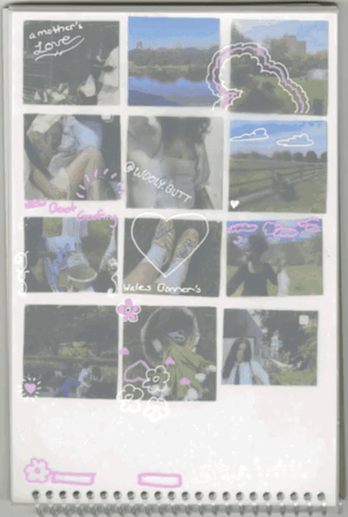
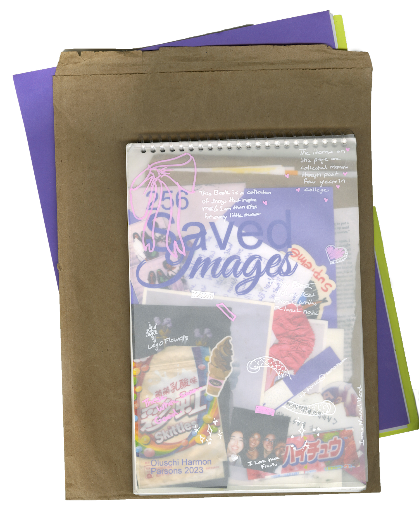
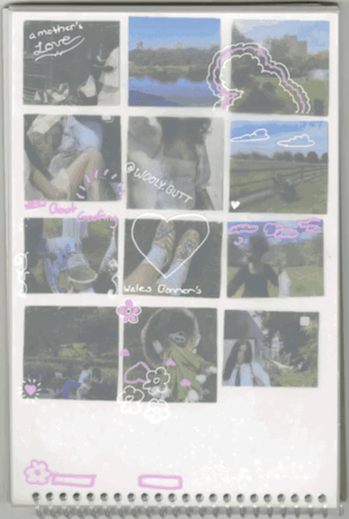
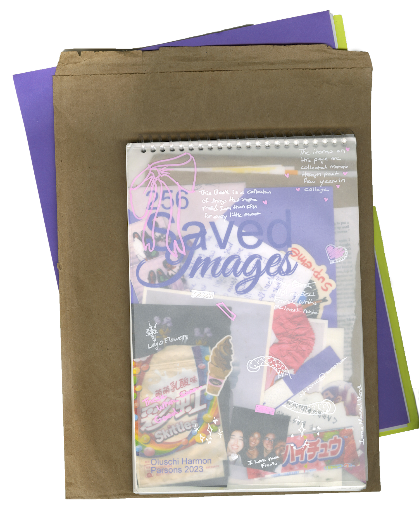

Al-Majles
Experimental Design, 2022
Al-Majles, captures the essence of the psychology of Arabia men through the stylization of late 90s editing. My process consisted of a mix of various Adobe platforms such as After Effects, Photoshop, and Illustrator to achieve this nostalgic effect.
Photos by @toomysvisuals
Edited by @oluschi.png


 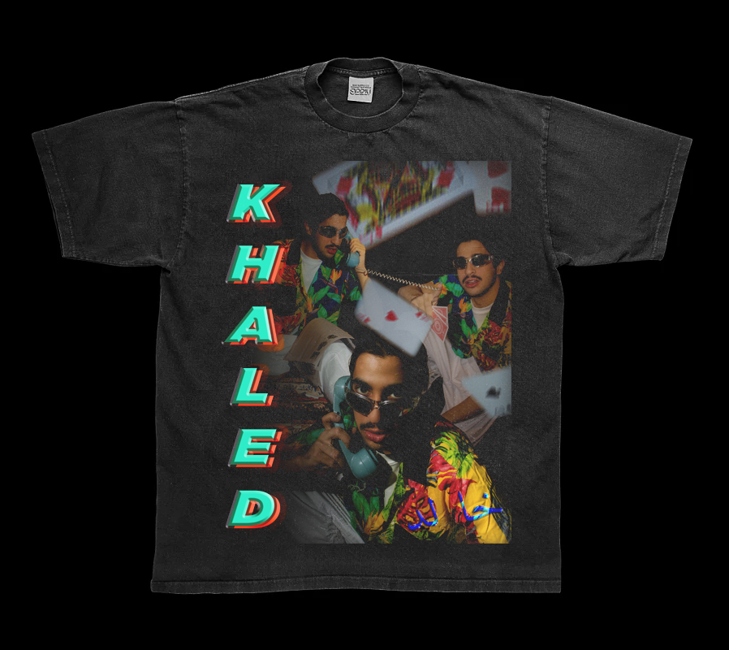
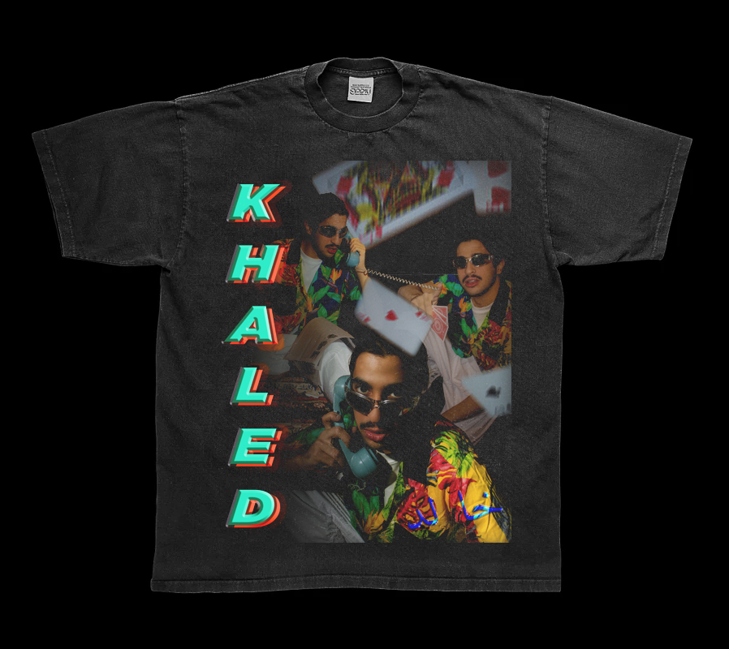


Withdraw
Branding + Rhino Design, 2022
Withdraw exhibition, explores how technology can be employed to connect visitors with their desired form of nature all within one space. Whether it is an oasis beach, a serene forest path, a vast desert, or a tropical rainforest, viewers will be fully immersed through digital videos, sounds, and accompanying floral displays that will bring these habitats to life. The goal is to allow visitors to take a step back from their normal use of technology and expand upon the vast variety of environments through the click of a button.
Nova
Branding + Filter, 2021
Nova Ray's Diner is a restaurant geared towards the reminiscent experiences of Southern Diners through a simulated virtual experience. The way food will not be consumed in a literal sense, but through a VR experience, where users can be anywhere in the galaxy to experience the nostalgia.
Influence behind the Diner:
50s- Dinner aesthetic
60s- Influence of Space Imagery/ Cold War
70s- Rise of Afro-Futurism and Black Pride
80s- The use of Neon colors and the depiction of space in film


 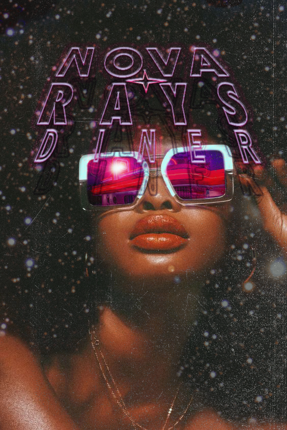
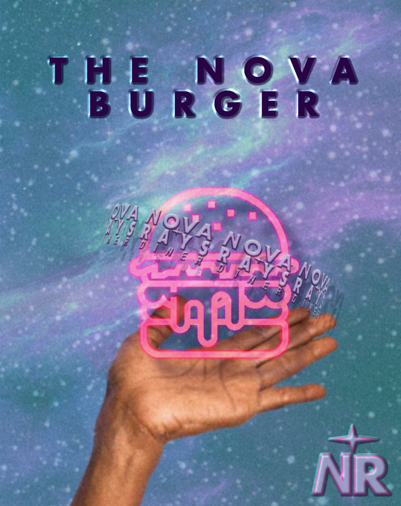
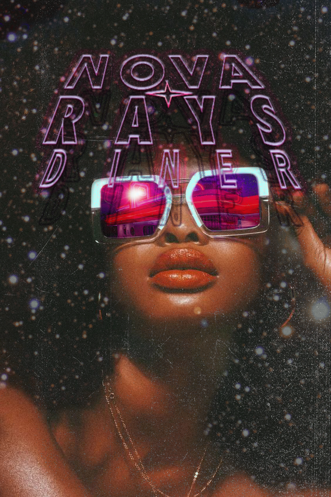
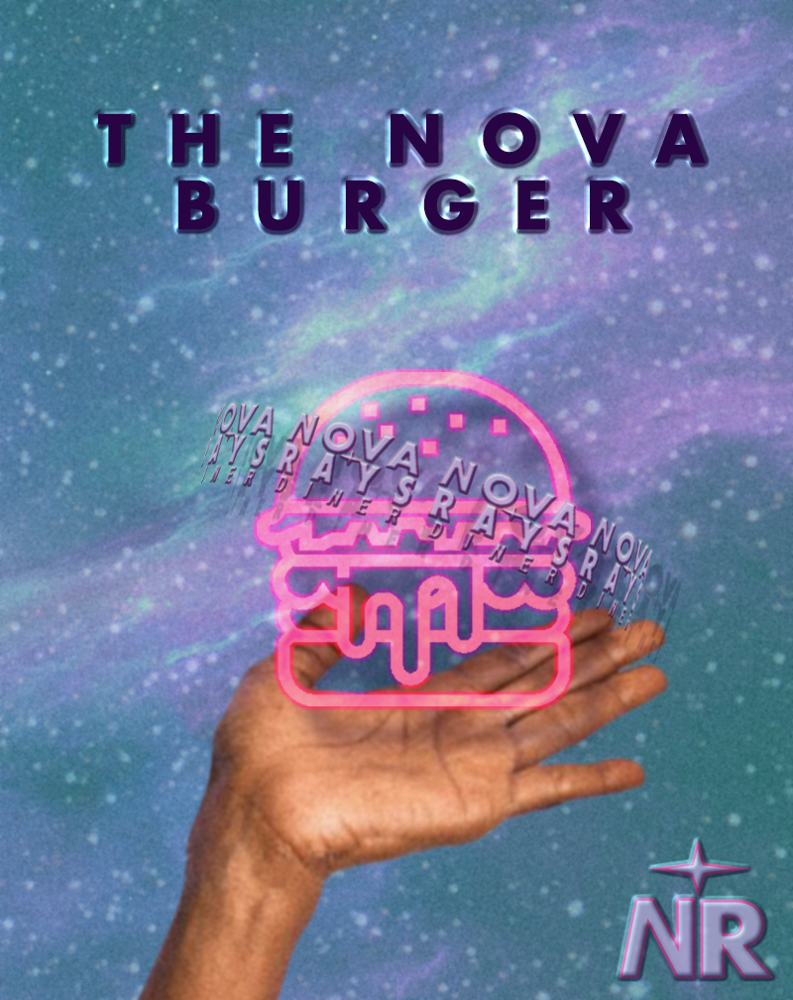

Poster Series
Book + Type Design, 2021
Throughout the semester I was tasked with creating weekly poster designs that went along with our readings. By the end, we compiled the posters together and created a book series that complemented our poster

 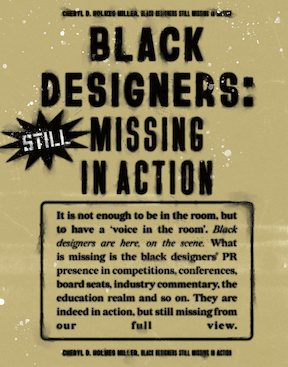
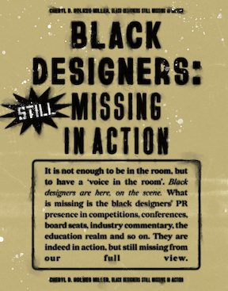


Manifesto Posters: Taking Up Space
Type Design, 2020
This project focused on the creation of a series of posters based off a manifesto of our choice. For my design, I choose the manifesto “Taking Up Space” by Chelsea Kwaky and Ore Ogunbiyi. This manifesto discusses the lack of diversity in higher education, and addresses the topic such as decolonising curriculms, access, mental health, and activism within this setting.